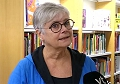
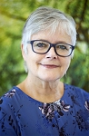
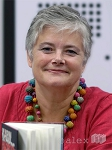
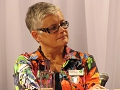

Karin Alfredsson
Journalist, författare, programchef SVT, gästprofessor i journalistik, Umeå uni.
| Född: | 1953 Renmarksv 5, Lycksele, Lycksele fs, Lycksele kn. [1] |
|---|
| Vigsel: | 1987-07-02 Västerleds fs, Bromma, Stockholms stad. [2] |
|---|
| Barn: |
|---|
| Jon Andersson (1977 - ) |
| Jenny Andersson Ljunglöf (1979 - ) |
| Jakob Andersson Kakembo (1987 - ) |
Noteringar
Karin Alfredsson föddes i Lycksele i södra Lappland. Efter sin studentexamen 1971 flyttade hon till Stockholm för studier vid Journalisthögskolan. Hon inledde sin yrkesbana som reporter på Aftonbladet och har bl.a. arbetat för TV; på Rapport, Aktuellt och Kalla Fakta samt varit programchef för SVT Nord. Hon har även undervisat på Poppius journalistskola, varit chefredaktör för tidningen Journalisten och gästprofessor i journalistik vid Umeå universitet.
Under alla år har Karin Alfredsson rest mycket runtom i världen och som frilans skrivit reportage speciellt inriktade på kvinnors livssituation. En period bodde hon i Hanoi och arbetade där med journalistutbildning. Under 2010-12 ingick hon i projektet Cause of Death: Woman och reste tillsammans med ett par kollegor runt i tio länder för att journalistiskt dokumentera våld mot kvinnor. 2012-15 arbetade hon som regionchef för biståndsorganisationen We Effect i södra Afrika och var bosatt i Zambia. Efter att ha återvänt till Sverige bor hon i Solna och är verksam som föredragshållare, frilansjournalist och författare. I hennes familj ingår man, tre vuxna barn och barnbarn.
Med 80 grader från Varmvattnet inledde hon en serie spänningsromaner, som med läkaren Ellen Elg som huvudperson skildrar kvinnors förhållanden i världen. Den första delen, belönad med Svenska Deckarakademins debutantdiplom, har centrum i södra Afrika, medan Kvinnorna på 10:e våningen utspelar sig i Hanoi. Klockan 21:37 skildrar sexuellt förtryck och katolsk reaktion i Polen. Boken väckte stor debatt i Polen, medan den bara fanns utgiven på svenska, med anledning av sin kritik mot katolskt abortmotstånd. Bok nummer fyra i serien, Den sjätte gudinnan, behandlar kvinnornas situation i Indien. Bok nummer fem, som kom ut i augusti 2011, heter Pojken i hiss 54 och utspelar sig i Pakistan och Dubai. Den nominerades till 2011 års bästa kriminalroman av Svenska Deckarakademin. Böckerna om Ellen Elg har översatts till danska, holländska, polska och isländska.
Bibliografi
Den man älskar agar man? 1979
Lära hela livet! 1988
Vem älskar en lärare? 1988
Skolan 1990
Kön bestämmer lön 1990
Livets fester 1992
Korsdrag i vården 1993 (tillsammans med Gunna Grähs)
Ställ till med fest 1995
Det blir aldrig som förr 1998
Varannan herrarnas 2000
80 grader från Varmvattnet 2006
Kvinnorna på 10:e våningen 2008
Klockan 21:37 2009
Den sjätte gudinnan 2010
Pojken i hiss 54 2011
Skrik tyst så inte grannarna hör 2017
Vajlett och Rut 2018
Sista färjan från Ystad 2019
Priser och utmärkelser
Debutant-diplomet 2006 - 80 grader från varmvattnet
Utdelas inte varje år, utan enbart efter förslag från enskilda ledamöter eller särskilda prisgrupper.
Centerkvinnornas utmärkelse Årets brytare 2010, för sitt arbete för att uppmärksamma kvinnors förhållanden
Personhistoria
| Årtal | Ålder | Händelse |
|---|
| 1953 |
|
Födelse 1953 Renmarksv 5, Lycksele, Lycksele fs, Lycksele kn [1] |
| 1977 |
|
Sonen Jon Andersson föds 1977 Gustaf Vasa fs, Stockholms stad [3] |
| 1979 |
|
Dottern Jenny Andersson Ljunglöf föds 1979 Järfälla fs, Järfälla kn [3] |
| 1987 |
|
Sonen Jakob Andersson Kakembo föds 1987 Västerleds fs, Bromma, Stockholms stad [2] |
| 1987 |
|
Vigsel Jan (Janne) Andersson 1987-07-02 Västerleds fs, Bromma, Stockholms stad [2] |
| 2010 |
|
Modern Elsy Kristina Ljunglöf dör 2010-02-05 Bångvägen 1, Lycksele, Lycksele fs, Lycksele kn [4] |
| 2011 |
|
Fadern Rolf Elmer Rune Alfredsson dör 2011-01-04 Jägmästaregatan 3, Lycksele, Lycksele fs, Lycksele kn [5] |
Dokument
Källor
| [1] | Mtl Sveriges befolkning 1950 |
| |
| | |
| [2] | Mantalslängd 1991, Stockholms län |
| |
| | |
| [3] | Mtl Sveriges befolkning 1985 |
| |
| | |
| [4] | FK 13, man91, SDB7_04645695 |
| |
| | |
| [5] | FK 13, man91, SDB7_04524561 |
| |
|
|  |
2019-02-13. Karin Alfredsson - litteraturkväll på biblioteket Hörnefors
Jan Färingö, SVT
Foto: SVT
|
| |
|  |
2018-10-09. Karin Alfredsson
Karin Alfredsson - Skrik tyst så inte grannarna hör
Kom och hör henne berätta om sitt skrivande, sina böcker och kvinnors situation runt om i världen. Elever från Kulturskolan inleder kvällen. Efter föreläsningen blir det bokförsäljning och signering. Kulturskolans föräldraförening säljer kaffe & kaka från kl. 17.45. Foto: Bengt Alm
evenemang.lomma.se/item/karin-alfredsson-skrik-tyst-sa-inte-grannarna-hor/gb0zv96fqx44nekk0z7skcfskwpgkmdx
|
| |
|  |
2013-03-12. Karin Alfredsson, journalist och författare
Foto: Foto: Ola Erikson / Forflex
Maria West
Publicerad: 12 mars 2013
www.alex.se/lexicon/article/alfredsson-karin
|
| |
|  |
| 2010. Karin Alfredsson, journalist och författare på Bokmässan 2010 |
|
{kind=link}
{kind=link}
{kind=link}
{kind=link}